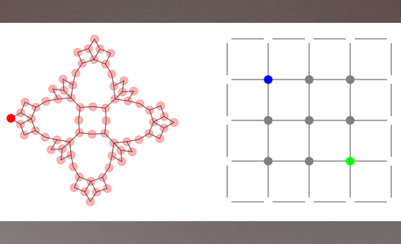
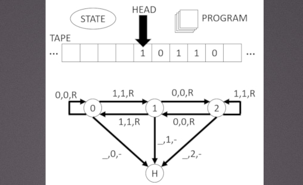
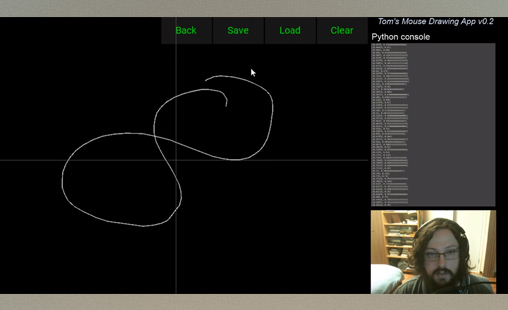

January, 2022
State Complexes of
Gridworlds

While completing a 4-month lab rotation in a pure mathematics group, I was inspired to apply concepts from geometry and topology to AI. This led to a joint paper with mathematician Robert Tang.
July, 2019
TuringMachine.jl

To help me learn the Julia programming language I made a Turing machine simulator. It simulates arbitrary Turing machines using user-defined Radó cards. This was accepted as an official Julia package.
April, 2018
Data Collection for
Recurrent Neural Networks

In my research with RNNs, it was important to use naturalistic yet low-dimensional data. For this purpose, I built a simple GUI application in Python to generate and collect 2D mouse input data.